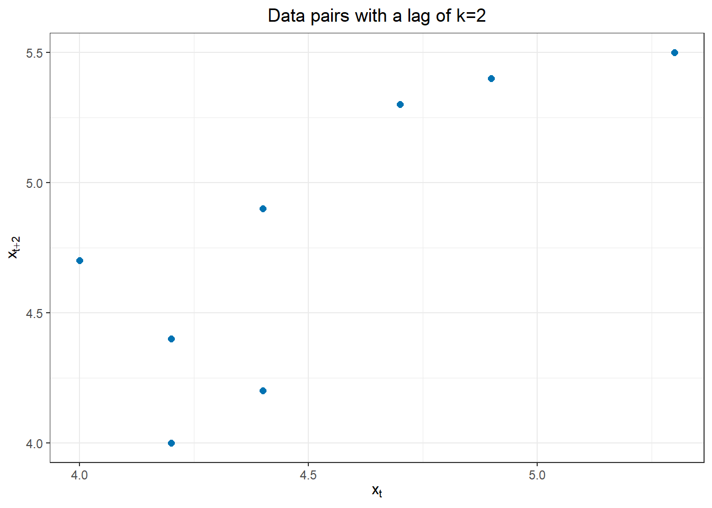

Loading required package: pacmanSample Statistics and Correlation
Chapter 2
1.1 Functions & Stuff
2 Chapter 2
(I known this looks funky, its a quarto numbering quirk, I assume the when we host through the school they will get around this with something more versatile.)
2.1 Motivate the chapter. Why does it matter?
2.1.1 Connect this with Ch1.1
2.2 Differentiate population and sample properties and statistics
2.2.1 Define population and samples
2.2.2 Illustrate population and samples using pdf and histogram
2.3 Contrast parameters and statistics, estimators and estimates
2.4 Calculate a sample arithmetic mean
2.4.1 Define expected value and sample mean
The expected value, also known as the population mean, represents the true average value of the entire population you’re interested in. Unfortunately, obtaining the data for the entire population can be impractical or even impossible. This is where sample mean comes in.
# Sample data
data <- data.frame(val=rnorm(200, 1.37)) # Generate 20 random numbers from a normal distribution
# Sample mean calculation
sample_mean <- mean(data$val)
# Print the sample mean
cat("Sample mean:", sample_mean, "\n")Sample mean: 1.251014 2.4.2 Explain the intuition of sample mean using a histogram
A histogram helps visualize the distribution of the data points in your sample. The sample mean, by definition, tends to be concentrated around the center of this distribution. The more data points you have in your sample, the closer the sample mean gets to the true expected value.
# Histogram with sample mean highlighted
ggplot(data, aes(x = val)) +
geom_histogram(bins = 15, color = "lightblue") + # Adjust bin count as needed
labs(x = "Data value", y = "Frequency", title = "Sample mean distribution") +
geom_vline(xintercept = sample_mean, color = "red", linetype = "dashed", lwd = 2, label = "Sample Mean") +
theme_classic() # Optional: adjust plot aestheticsWarning in geom_vline(xintercept = sample_mean, color = "red", linetype =
"dashed", : Ignoring unknown parameters: `label`By looking at the histogram, you can see how the data points tend to cluster around the sample mean, providing an intuition for how it estimates the true expected value of the population.
2.5 Calculate a sample standard deviation
2.5.1 Define population and sample variance standard deviation
2.5.2 Explain the intuition behind the sample standard deviation using a histogram
2.5.3 Explain a box and whiskers plot.
2.6 Calculate sample covariance and correlation coefficient.
2.6.1 Define covariance and sample covariance
2.6.2 Explain the intuition of covariance using a scatter plot
2.6.3 Define the correlation and sample correlation coefficient.
2.6.4 Interpret an estimate of sample correlation coefficient.
2.7 Calculate a sample autocorrelation
2.7.1 Define population and sample autocorrelation
2.7.2 Explain the intuition of sample autocorrelation using a scatter plot
2.7.3 Interpret an estimate of sample autocorrelation at different lags
2.7.4 Define a correlogram
2.7.5 Conduct hypothesis testing using a correlogram
2.8 Content Dump
Learning Outcomes
Compute the key statistics used to describe the linear relationship between two variables
- Compute the sample mean
- Compute the sample variance
- Compute the sample standard deviation
- Compute the sample covariance
- Compute the sample correlation coefficient
- Explain sample covariance using a scatter plot
Interpret the key statistics used to describe sample data
- Interpret the sample mean
- Interpret the sample variance
- Interpret the sample standard deviation
- Interpret the sample covariance
- Interpret the sample correlation coefficient
Preparation
- Read Sections 2.1-2.2.2 and 2.2.4
Learning Journal Exchange (10 min)
- Review another student’s journal
- What would you add to your learning journal after reading your partner’s?
- What would you recommend your partner add to their learning journal?
- Sign the Learning Journal review sheet for your peer
Class Activity: Variance and Standard Deviation (10 min)
We will explore the variance and standard deviation in this section.
The following code simulates observations of a random variable. We will use these data to explore the variance and standard deviation.
# Set random seed
set.seed(2412)
# Specify means and standard deviation
n <- 5 # number of points
mu <- 10 # mean
sigma <- 3 # standard deviation
# Simulate normal data
sim_data <- data.frame(x = round(rnorm(n, mu, sigma), 1)) |>
arrange(x)The data simulated by this process are:
The variance and standard deviation are individual numbers that summarize how far the data are from the mean. We first compute the deviations from the mean, \(x - \bar x\). This is the directed distance from the mean to each data point.

We can summarize this information in a table:
Table 1: Deviations from the mean
| $$x_t$$ | $$x_t-\bar x$$ | ||||
|---|---|---|---|---|---|
| 6.9 | -2.5 | ||||
| 7.7 | -1.7 | ||||
| 8.1 | -1.3 | ||||
| 10.8 | 1.4 | ||||
| 13.5 | 4.1 |
Class Activity: Covariance and Correlation (15 min)
\[ r \cdot s_x \cdot s_y = \frac{\sum\limits_{t=1}^n (x - \bar x)(y - \bar y)}{\sqrt{\sum\limits_{t=1}^n (x - \bar x)^2} \sqrt{\sum\limits_{t=1}^n (y - \bar y)^2}} \cdot \sqrt{ \frac{\sum\limits_{t=1}^n (x - \bar x)^2}{n-1} } \cdot \sqrt{ \frac{\sum\limits_{t=1}^n (y - \bar y)^2}{n-1} } = ? \]
Team Activity: Computational Practice (15 min)
Table 3: Computational Practice
The table below contains values of two time series \(\{x_t\}\) and \(\{y_t\}\) observed at times \(t = 1, 2, \ldots, 6\). We will use these values to practice finding the means, standard deviations, correlation coefficient, and covariance without using built-in R functions.
| $$t$$ | $$x_t$$ | $$y_t$$ | $$x_t-\bar x$$ | $$(x_t - \bar x)^2$$ | $$y_t-\bar y$$ | $$(y_t-\bar y)^2$$ | $$(x_t - \bar x)(y_t-\bar y)$$ |
|---|---|---|---|---|---|---|---|
| 1 | -2.1 | 2.8 | -1.9 | 3.61 | 1 | 1 | -1.9 |
| 2 | -0.2 | 2.2 | |||||
| 3 | 0.8 | 0.9 | |||||
| 4 | 0.4 | 2 | |||||
| 5 | 2.3 | -1 | |||||
| 6 | -2.4 | 3.9 | |||||
| sum | -1.2 | 10.8 | |||||
| $$~$$ |
Use the table above to determine these values:
\(\bar x =\)
\(\bar y =\)
\(s_x =\)
\(s_y =\)
\(r =\)
\(\\cov(x,y) =\)
Here is a scatterplot of the data.
Summary
Computations in R (5 min)
Use these commands to load the data from the previous activity into R.
x <- c( -2.1, -0.2, 0.8, 0.4, 2.3, -2.4 )y <- c( 2.8, 2.2, 0.9, 2, -1, 3.9 )We can use R to compute the mean, variance, standard deviation, correlation coefficient, and covariance.
Mean, \(\bar x\)
mean(x)[1] -0.2Variance, \(s_x^2\)
var(x)[1] 3.212Standard Deviation, \(s_x\)
sd(x)[1] 1.792205Correlation Coefficient, \(r\)
cor(x, y)[1] -0.9449384Covariance, \(\\cov(x,y)\)
cov(x, y)[1] -2.862.8.1 New section 1
Learning Outcomes
Define key terms in time series analysis
- Define the ensemble of a time series
- Define the expected value (or mean function) of a time series model
- Define the sample estimate of the population mean of a time series
- Define the variance function of a time series model
- State the constant variance estimator for a time series model
- Explain the stationarity assumption
- Explain the stationary variance assumption
- Define lag
- Define autocorrelation
- Define the second-order stationary time series
- Explain the autocovariance function in Equation (2.11)
- Explain the lag k autocorrelation function in Equation (2.12)
- Define the autocovariance function, acvf
- Define the sample autocorrelation function, acf
Calculate sample estimates of autocovariance and autocorrelation functions from time series data
- Define the sample autocovariance function, c_k
- Define the sample autocorrelation function, r_k
Preparation
- Read Sections 2.2.5 and 2.3-2.5
Learning Journal Exchange (10 min)
- Review another student’s journal
- What would you add to your learning journal after reading your partner’s?
- What would you recommend your partner add to their learning journal?
- Sign the Learning Journal review sheet for your peer
Hands-on Exercise – Exploring Sample Autocorrelation (40 min)
Autocovariance and Autocorrelation
We will use the following data to explore the concepts of autovariance and autocorrelation.
| t | $$ x_t $$ |
|---|---|
| 1 | 4.4 |
| 2 | 4.2 |
| 3 | 4.2 |
| 4 | 4.0 |
| 5 | 4.4 |
| 6 | 4.7 |
| 7 | 4.9 |
| 8 | 5.3 |
| 9 | 5.4 |
| 10 | 5.5 |
You can use this R command to read in the observations.
x <- c( 4.4, 4.2, 4.2, 4, 4.4, 4.7, 4.9, 5.3, 5.4, 5.5 )
We will use the sample mean of these data repeatedly. The value of \(\bar x\) is:
\[ \bar x = \frac{1}{n} \sum\limits_{t=1}^{n} x_t = \frac{1}{10} \cdot 47 = 4.7 \]
We will be finding the autocovariance and correlation of a time series with itself. First, we start with a lag of 1. With a lag of 1 the corresponding values of the time series that are being compared are shifted by one time unit. Then, we will consider any integer lag: lag \(k\).
Lag \(k\) Sample Autocovariance Function (acvf), \(c_k\)
The lag \(k\) sample autocovariance function, acvf, denoted \(c_k\), is defined as
\[ c_k = \frac{1}{n} \sum\limits_{t=1}^{n-k}(x_t-\bar x)(x_{t+k}-\bar x) \]
We denote the lag by the letter \(k\), where \(k \ge 0\). This is the number of values the data set is shifted to compute the autocovariance.
Lag \(k=1\) Sample Autocovariance Function, \(c_1\)
We will now find the autocovariance between the values in a time series (\(x = x_t\)) and the same values, shifted by one unit of time (\(y = x_{t+1}\)).
| t | $$ x_t $$ | $$ x_{t+k} $$ | $$ x_t-\bar x $$ | $$ (x_t-\bar x)^2 $$ | $$ x_{t+k}-\bar x$$ | $$ (x-\bar x)(x_{t+k}-\bar x) $$ |
|---|---|---|---|---|---|---|
| 1 | 4.4 | 4.2 | -0.3 | 0.09 | -0.5 | 0.15 |
| 2 | 4.2 | 4.2 | -0.5 | 0.25 | -0.5 | 0.25 |
| 3 | 4.2 | 4 | -0.5 | 0.25 | -0.7 | 0.35 |
| 4 | 4 | 4.4 | -0.7 | 0.49 | -0.3 | 0.21 |
| 5 | 4.4 | 4.7 | -0.3 | 0.09 | 0 | 0 |
| 6 | 4.7 | 4.9 | 0 | 0 | 0.2 | 0 |
| 7 | 4.9 | 5.3 | 0.2 | 0.04 | 0.6 | 0.12 |
| 8 | 5.3 | 5.4 | 0.6 | 0.36 | 0.7 | 0.42 |
| 9 | 5.4 | 5.5 | 0.7 | 0.49 | 0.8 | 0.56 |
| 10 | 5.5 | — | 0.8 | 0.64 | — | — |
| sum | 47 | 42.6 | 0 | 2.7 | 0.3 | 2.06 |
The scatterplot below illustrates the relationship between the observed data (\(x_t\)) and the next observation (\(x_{t+1}\)).
In this example, the second variable is \(x_{t+1}\), where \(t>1\). the autocovariance of \(x_t\) and \(x_{t+1}\) is:
\[ c_1 = \frac{1}{n} \sum\limits_{t=1}^{n-1}(x_t-\bar x)(x_{t+1}-\bar x) = \frac{1}{10} \sum\limits_{t=1}^{9}(x_t-\bar x)(x_{t+1}-\bar x) = \frac{1}{10} \cdot 2.06 = 0.206 \]
This is the (auto)covariance of \(x\) with itself, but with a lag of 1 time unit. This is the value of the lag \(k=1\) autocovariance function, acvf_1.
Lag \(k\) Sample Autocorrelation Function (acf), \(r_k\)
The sample autocorrelation function, acf, denoted \(r_k\), where \(k\) is the lag, is defined as
\[ r_k = \frac{c_k}{c_0} = \frac{ \frac{1}{n} \sum\limits_{t=1}^{n-k}(x_t-\bar x)(x_{t+k}-\bar x) }{ \frac{1}{n} \sum\limits_{t=1}^{n}(x_t-\bar x)^2 } = \frac{ \sum\limits_{t=1}^{n-k}(x_t-\bar x)(x_{t+k}-\bar x) }{ \sum\limits_{t=1}^{n}(x_t-\bar x)^2 } \]
Note that \(c_0\) is the variance of \(x\), but computed by dividing by \(n\), instead of \(n-1\).
Lag \(k=1\) Sample Autocorrelation Function, \(r_1\)
We can compute the lag 1 autocorrelation or the autocorrelation of \(x\) with lag 1 as the quotient \(r_1 = \frac{c_1}{c_0}\). We have already determined that \(c_1 = 0.206\). We now compute \(c_0\):
\[ c_0 = \frac{1}{n} \sum\limits_{t=1}^{n-0} (x_t-\bar x)(x_{t+0}-\bar x) = \frac{1}{n} \sum\limits_{t=1}^{n} (x_t-\bar x)^2 = \frac{1}{10} \cdot 2.7 = 0.27 \]
We use \(c_0\) and \(c_1\) to compute \(r_1\). Here are two ways we can compute this value:
\[\begin{align*} r_1 &= \frac{c_1}{c_0} = \frac{ \frac{1}{n} \sum\limits_{t=1}^{9}(x_t-\bar x)(x_{t+1}-\bar x) }{ \frac{1}{n} \sum\limits_{t=1}^{10}(x_t-\bar x)^2 } = \frac{ \frac{1}{10} \cdot 2.06 }{ \frac{1}{10} \cdot 2.7 } = \frac{0.206}{0.27} = 0.763 \\ &= \frac{ \sum\limits_{t=1}^{9}(x_t-\bar x)(x_{t+1}-\bar x) }{ \sum\limits_{t=1}^{10}(x_t-\bar x)^2 } = \frac{2.06}{2.7} = 0.763 \end{align*}\]
- What does the lag 1 autocorrelation, \(c_1\), measure?
Lag \(k = 2\)
| t | $$ x_t $$ | $$ x_{t+k} $$ | $$ x_t-\bar x $$ | $$ (x_t-\bar x)^2 $$ | $$ x_{t+k}-\bar x$$ | $$ (x-\bar x)(x_{t+k}-\bar x) $$ |
|---|---|---|---|---|---|---|
| 1 | 4.4 | 4.2 | -0.3 | 0.09 | -0.5 | 0.15 |
| 2 | 4.2 | 4 | -0.5 | 0.25 | -0.7 | 0.35 |
| 3 | 4.2 | 4.4 | -0.5 | 0.25 | -0.3 | 0.15 |
| 4 | 4 | |||||
| 5 | 4.4 | |||||
| 6 | 4.7 | |||||
| 7 | 4.9 | 5.4 | 0.2 | 0.04 | 0.7 | 0.14 |
| 8 | 5.3 | 5.5 | 0.6 | 0.36 | 0.8 | 0.48 |
| 9 | 5.4 | — | 0.7 | 0.49 | — | — |
| 10 | 5.5 | — | 0.8 | 0.64 | — | — |
| sum | 47 |
The figure below illustrates the relationship between \(x_t\) and \(x_{t+2}\).

Lag \(k = 3\)
| t | $$ x_t $$ | $$ x_{t+k} $$ | $$ x_t-\bar x $$ | $$ (x_t-\bar x)^2 $$ | $$ x_{t+k}-\bar x$$ | $$ (x-\bar x)(x_{t+k}-\bar x) $$ |
|---|---|---|---|---|---|---|
| 1 | 4.4 | 4 | -0.3 | 0.09 | -0.7 | 0.21 |
| 2 | 4.2 | 4.4 | -0.5 | 0.25 | -0.3 | 0.15 |
| 3 | 4.2 | 4.7 | -0.5 | 0.25 | 0 | 0 |
| 4 | 4 | 4.9 | -0.7 | 0.49 | 0.2 | -0.14 |
| 5 | 4.4 | 5.3 | -0.3 | 0.09 | 0.6 | -0.18 |
| 6 | 4.7 | 5.4 | 0 | 0 | 0.7 | 0 |
| 7 | 4.9 | 5.5 | 0.2 | 0.04 | 0.8 | 0.16 |
| 8 | 5.3 | — | 0.6 | 0.36 | — | — |
| 9 | 5.4 | — | 0.7 | 0.49 | — | — |
| 10 | 5.5 | — | 0.8 | 0.64 | — | — |
| sum | 47 | 34.2 | 0 | 2.7 | 1.3 | 0.2 |
The figure below illustrates the correlations between \(x_t\) and \(x_{t+3}\). Note that \(c_3 = \dfrac{0.2}{10} = 0.02\) and \(r_3 = \dfrac{0.02}{0.27} = 0.0741\).

Lag \(k = 4\)
| t | $$ x_t $$ | $$ x_{t+k} $$ | $$ x_t-\bar x $$ | $$ (x_t-\bar x)^2 $$ | $$ x_{t+k}-\bar x$$ | $$ (x-\bar x)(x_{t+k}-\bar x) $$ |
|---|---|---|---|---|---|---|
| 1 | 4.4 | |||||
| 2 | 4.2 | |||||
| 3 | 4.2 | |||||
| 4 | 4 | |||||
| 5 | 4.4 | |||||
| 6 | 4.7 | |||||
| 7 | 4.9 | |||||
| 8 | 5.3 | |||||
| 9 | 5.4 | |||||
| 10 | 5.5 | |||||
| sum | 47 |
The figure below illustrates the correlations between \(x_t\) and \(x_{t+4}\).

Class Activity: Using R to compute the acvf and acf (5 min)
We will continue to use the following sample data.
x <- c( 4.4, 4.2, 4.2, 4, 4.4, 4.7, 4.9, 5.3, 5.4, 5.5 )
df <- data.frame(x = x)acvf
This code gives the values of the acvf.
acf(df$x, plot=FALSE, type = "covariance")
Autocovariances of series 'df$x', by lag
0 1 2 3 4 5 6 7 8 9
0.270 0.206 0.121 0.020 -0.064 -0.113 -0.127 -0.093 -0.061 -0.024 acf
We can obtain the acf by changing the argument for the paramter type to "correlation".
acf(df$x, plot=FALSE, type = "correlation")
Autocorrelations of series 'df$x', by lag
0 1 2 3 4 5 6 7 8 9
1.000 0.763 0.448 0.074 -0.237 -0.419 -0.470 -0.344 -0.226 -0.089 Homework Preview (5 min)
- Review upcoming homework assignment
- Clarify questions
Homework
2.8.2 New section 2
Learning Outcomes
Explain the theoretical implications of autocorrelation for the estimation of time series statistics
- Explain how positive autocorrelation leads to underestimation of variance in short time series
- Explain how negative autocorrelation can improve efficiency of sample mean estimate
Interpret correlograms to identify significant lags, correlations, trends, and seasonality
- Create a correlogram
- Interpret a correlogram
- Define a sampling distribution
- State the sampling distribution of rk
- Explain the concept of a confidence interval
- Conduct a single hypothesis test using a correlogram
- Describe the problems associated with multiple hypothesis testing in a correlogram
- Differentiate statistical and practical significance
- Diagnose non-stationarity using a correlogram
Preparation
- Read Sections 2.2.5 and 2.3-2.5 (No new reading assignment)
Learning Journal Exchange (10 min)
- Review another student’s journal
- What would you add to your learning journal after reading your partner’s?
- What would you recommend your partner add to their learning journal?
- Sign the Learning Journal review sheet for your peer
Correlograms (10 min)
In the previous lesson, we used the following time series as an example. Here are the values in that time series:
x <- c( 4.4, 4.2, 4.2, 4, 4.4, 4.7, 4.9, 5.3, 5.4, 5.5 )- The table below gives the sample autocorrelation function, acf, for this data set. You may recognize some of these values from the previous lesson.
| 0 | 1 | 2 | 3 | 4 | 5 | 6 | 7 | 8 | 9 |
|---|---|---|---|---|---|---|---|---|---|
| 1 | 0.763 | 0.448 | 0.074 | -0.237 | -0.419 | -0.47 | -0.344 | -0.226 | -0.089 |
Application: Chocolate Search Trends (10 min)
Recall the Google Trends data for the term “chocolate” from the last lesson. The cleaned data are available in the file chocolate.csv.
Import the chocolate search data and convert to tsibble format
Use the code below to import the data and convert it into a time series (tsibble) object.
# load packages
if (!require("pacman")) install.packages("pacman")
pacman::p_load("tsibble", "fable",
"feasts", "tsibbledata",
"fable.prophet", "tidyverse",
"patchwork", "rio")
# read in the data from a csv and make the tsibble
# change the line below to include your file path
chocolate_month_ts <- rio::import("https://byuistats.github.io/timeseries/data/chocolate.csv") |>
mutate(
dates = yearmonth(ym(Month)),
month = month(dates),
year = year(dates),
value = chocolate
) |>
dplyr::select(dates, month, year, value) |>
as_tsibble(index = dates)
choc_decompose <- chocolate_month_ts |>
model(feasts::classical_decomposition(value,
type = "add")) |>
components()
autoplot(choc_decompose)Here are the values of the acf for the chocolate search data:
acf(chocolate_month_ts$value, plot=FALSE, type = "correlation", lag.max = 25)
Autocorrelations of series 'chocolate_month_ts$value', by lag
0 1 2 3 4 5 6 7 8 9 10
1.000 0.522 0.440 0.159 0.041 -0.018 -0.081 -0.024 0.020 0.121 0.386
11 12 13 14 15 16 17 18 19 20 21
0.425 0.814 0.426 0.357 0.103 -0.001 -0.051 -0.114 -0.057 -0.003 0.104
22 23 24 25
0.358 0.398 0.768 0.389 Here is the associated correlogram:
acf(chocolate_month_ts$value, plot=TRUE, type = "correlation", lag.max = 25)If we consider only the random component of this time series, the correlogram is:
acf(choc_decompose$random |> na.omit(), plot=TRUE, type = "correlation", lag.max = 25)Small Group Activity: BYU-Idaho On-Campus Enrollment (25 min)
The official number of on-campus BYU-Idaho students each semester is given in the file byui_enrollment.csv.
Homework Preview (5 min)
- Review upcoming homework assignment
- Clarify questions